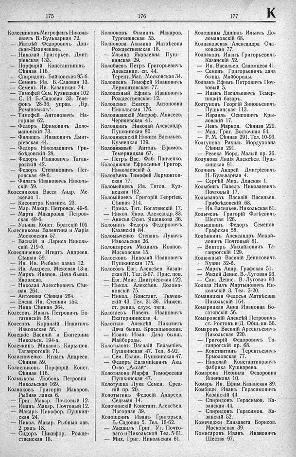

Лист источника 409
Скан

Распознанный текст
175
Колесниковъ Митрофанъ Никола-
евичъ В.-Бульварная 72.
— Матвѣй Ѳедоровичъ Дон-
ская-Нахичевань.
— Николай Григорьев. Дмит-
ріевская 133.
— Порфирій Константиновъ
Сѣнная 116.
— Спиридонъ Байковская 95-б.
— Семенъ Ив. Б.-Садовая 13.
— Семенъ Ив. Казанская 74.
— Тимофей Сем. Кузнецкая 102
— С. И. Б.-Садовая 33. Теле-
фонъ 28-36. управ. „Бр.
Романовыхъ“.
— Тимофей Антоновичъ На-
горная 62.
— Федоръ Ефимовичъ Доло-
мановскій 73.
— Филиппъ Ивановичъ Дмит-
ріевская 44.
— Федоръ Николаевичъ Гри-
боѣдовскій 28.
— Федоръ Ивановичъ Таган-
рогскій 42.
— Федоръ Степановичъ Пет-
ровская 49-б.
— Филатъ Ивановичъ Николь-
скій 59.
Колесникова Васса Андр. Ме-
жевая 1.
— Клеопатра Казанск. 23.
— Мар. Макар. Петровск. 49-б.
— Марта Макаровна Петров-
ская 49-б.
— Ульяна Конст. Братскій 105.
Колесниковы Валентина и Марія
Московская 57.
— Василій и Лариса Николь-
скій 219-б.
Колесниченко Игнатъ Андреев.
Сѣнная 59.
— Ив. Ив. Рыбная лавка 12.
— Ив. Андреев. Межевая 13-а.
— Маркъ Иванов. Дача бывш.
Яковлева.
— Николай Алексѣевичъ Сѣн-
ная 264.
— Антонина Сѣнная 264.
— Елена Ив. Степная 154.
— Нина Сѣнная 264.
Колесовъ Иванъ Петровичъ Бо-
гатянскій 68.
Колесовъ Корнилій Никитичъ
Извольская 56.
Колецкіе Василій и Екатерина
Никольск. 194-а.
Колечкинъ Михаилъ Кирьянов.
Таганрогскій 71.
Колисниченко Игнатъ Андреев.
Сѣнная 59.
Колисниковъ Порфирій Конст.
Сѣнная 116.
Колмыкова Любовь Петровна
Никольская 169.
Колноковъ Григорій Макаров.
Рыбная лавка 6.
— Григ. Макар. Почтовый 12.
— Иванъ Макар. Почтовый 12.
— Макаръ Никофор. Пушкин-
ская 24.
— Никол. Макар. Рыбныя лав.
2 рядъ 18.
— Сидоръ Никифор. Рожде-
ственская 18.
176
Колноковъ Филиппъ Макаров.
Тургеневская 55.
Колнокова Акилина Матвѣевна
Рождественская 18.
— Ульяна Яковлевна Пуш-
кинская 29.
Колобаевъ Петръ Григорьевичъ
Александр. сп. 44.
— Терент. Мат. Московская 34.
Колодеевъ Тимофей Ивановичъ
Лермонтовская 77.
Колодезный Ефимъ Ивановичъ
Рождественская 12.
Колоденко Екатер. Антоновна
Никольская 176.
Колоджанскій Митроф. Моисеев.
Черняевская 41.
Колодкинъ Николай Александр.
Пушкинская 80.
Колодяженскій Никита Васильев.
Кузнецкая 139.
Колодяжный Антонъ Ефимов.
Темерницкая 67.
— Петръ Вас. Фаб. Панченко.
Колодяжная Ефросинья Григор.
Николаевскій 5.
Колодѣевъ Тимофей Лермонтов-
ская 77.
Коломейцевъ Ив. Титов. Куз-
нецкая 162.
Коломійцевъ Григорій Георгіев.
Сѣнная 214.
— Ермол. Тит. Богатянскій 17.
— Никол. Яков. Александр. 83.
— Анисья Осип. Ященкова 36.
Коломинъ Федоръ Федоровичъ
Казанскій 84.
Коломыченко Степанъ Лукичъ
Извольская 26.
Колонтаревъ Михаилъ Иванов.
Московская 15.
Колосковъ Николай Ивановичъ
Пушкинская 175.
Колосовъ Евг. Алексѣев. Казан-
ская 81. Тел. 3-67. Прис. пов.
— Евг. Моис. Дмитріевская 122.
— Никол. Алексѣев. Долома-
новскій 75.
— Никол. Констант. Ткачев-
скій 43. Тел. 31-36. Инжен.
ст. ревиз. служ. тяги.
Колотаевъ Павелъ Ивановичъ
Екатерининская 4.
Колотило Алексѣй Никитичъ
Дача бывш. Красильникова.
— Иванъ Иван. Дача бывш.
Майбороды.
Колотиловъ Василій Евлампіев.
Пушкинская 47. Тел. 8-92.
— Сем. Евлам. Пушкинская 47.
— Федоръ Евлампіевичъ Акц.
О-во „Аксай“.
Колотилова Марфа Тимофеевна
Пушкинская 47.
Колотушка Лука Семен. Сред-
ній пр. 20.
Колотыгинъ Федосій Андреев.
Седьмая 14.
Колочинскій Констант. Алексѣев.
Нагорная 39.
Колошеинъ Иванъ Григорьев.
Б.-Садовая 5. Тел. 16-62.
— Михаилъ Григ. Уг. Почто-
ваго и Никольской Тел. 5-61.
— Мих. Григ. Никольская 61.
177
К
Колошины Даніилъ Ильичъ До-
ломановскій 68.
Колпаковская Александра Оча-
ковская 77.
Колпаковъ Иванъ Григорьевичъ
Казанскій 52.
— Ив. Васильев. Садомцева 41.
— Семенъ Григорьевичъ дача
бывш. Майбороды.
Колпакъ Ефимъ Петровичъ Поч-
товый 5.
— Иванъ Васильевичъ Темер-
ницкій базаръ.
Колтуновъ Георгій Зиновьевичъ
Пушкинская 113.
— Израиль Осиповичъ Кры-
ловскій 17.
— Левъ Марков. Сѣнная 229.
— Мих. Григ. Восточная 64.
— Р. М. Сѣнная 291. Тел. 10-93.
Колтунова Рахиль Мордуховна
Сѣнная 291.
— Ревека Морд. Малый пр. 26.
Колунова Лидія Алексѣев. Пуш-
кинская 91.
Колчинъ Андрей Дмитріевичъ
Н.-Бульварная 4.
— Сергѣй Мих. Донская 1.
Колыбинъ Павелъ Николаевичъ
Почтовый 17.
Колывановъ Василій Васильев.
Грибоѣдовскій 68.
— Ив. Васильев. Никольская 61.
Колычевъ Григорій Фатѣевичъ
Шестая 126.
Колышкинъ Федоръ Семенов.
Графская 58.
Колѣнкинъ Александръ Михай-
ловичъ Почтовый 81.
— Викторъ Михайловичъ Та-
ганрогскій 129.
Колюжный Василій Денисовичъ
Кузни 32-б.
— Маркъ Андр. Графская 51.
— Михей Денис. В.-Луговая 93.
— Сам. Денис. В.-Луговая 93.
Коляда Нилъ Мартыновичъ Ни-
кольскій 3. Тел. 3-20.
Команицкая Федосья Матвѣевна
Никольскій 164.
Комарицкая Анна Ивановна Бо-
гатянскій 56.
Комаровскій Алексѣй Петровичъ
ст. Ростовъ н/Д. Общ. кв. 56.
Комаровъ Василій Арсентьевичъ
Никольская 220.
— Григорій Федоровичъ Та-
ганрогскій пр. 68.
— Константинъ Терентьевичъ
Ермоловская 77.
— Николай Константиновичъ
фабрика Кушнарева.
Комарова Неонила Федоровна
Ященкова 10.
Комарь Ив. Ефим. Казанская 89.
Комбици Иванъ Герасимовичъ
Казанскій 44.
— Спиридонъ Герасимов. Ка-
занская 44.
— Спиридонъ Герасимов. Ка-
занскій 52.
Комечеджи Елизавета Борисов.
Московская 39.
Комисаровъ Иванъ Ивановичъ
Шестая 97.